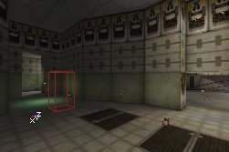
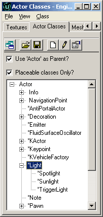
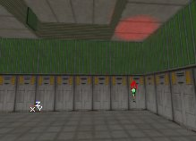
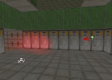

UDN
Search public documentation:
TypesOfLights
日本語訳
한국어
Interested in the Unreal Engine?
Visit the Unreal Technology site.
Looking for jobs and company info?
Check out the Epic games site.
Questions about support via UDN?
Contact the UDN Staff
한국어
Interested in the Unreal Engine?
Visit the Unreal Technology site.
Looking for jobs and company info?
Check out the Epic games site.
Questions about support via UDN?
Contact the UDN Staff
Types of Lights
Document Summary: A guide to the various types of LightActors and light sources. Document Changelog: Last updated by Jason Lentz (DemiurgeStudios?) to separate into more manageable docs. Original author - Lode Vandevenne (UdnStaff)Introduction
The most common light of course is the basic light you can add by right clicking in your level, but there are a variety of other ways to add lighting to your level. Here you will see what these alternatives are and how best to use them.ZoneLight
ZoneLight, or Ambient Lighting, is the second most common way to create light in your map. You don't need any light actors for this. It creates (boring) flat light on all the walls and objects in a whole zone, but it doesn't create any shadows and seems to come from nowhere. ZoneLight can be used to make the shadows less black, on terrain, or in rooms that are supposed to be very bright. To change the Ambient Lighting in a zone from your map, open the properties of the ZoneInfo actor in that zone, or, if there is no ZoneInfo, open the Level Properties in the menu View. (The Level Properties determine the zone settings for zones without ZoneInfo) In there, expand ZoneLight. For the actual ZoneLight, only AmbientBrightness, AmbientHue and AmbientSaturation are important, and they do the same as LightBrightness, LightHue and LightSaturation: AmbientBrightness changes the brightness of the ZoneLight: if you leave it at 0, there'll be no ZoneLight at all, the only light that is in the map comes from light actors:
For the actual ZoneLight, only AmbientBrightness, AmbientHue and AmbientSaturation are important, and they do the same as LightBrightness, LightHue and LightSaturation: AmbientBrightness changes the brightness of the ZoneLight: if you leave it at 0, there'll be no ZoneLight at all, the only light that is in the map comes from light actors:
 But if you set AmbientBrightness to respectively 32 and 128, it'll look like this:
But if you set AmbientBrightness to respectively 32 and 128, it'll look like this:

 If you set it to 255, all the surfaces in the zone will be almost fullbright, so you can hardly see the lighting from the light actors in the map:
If you set it to 255, all the surfaces in the zone will be almost fullbright, so you can hardly see the lighting from the light actors in the map:
 With AmbientHue and AmbientSaturation you can change the color of the Ambient Lighting:
With AmbientHue and AmbientSaturation you can change the color of the Ambient Lighting:


Other Light Actors
The Light Actors are not the only things that can give light. You can make any actor class emit light as long as it has the Lighting and LightColor properties in it. To get the lighting of an actor class working, make sure LightType is not LT_None, LightRadius > 0 and LightBrightness > 0. Some actors, Static Meshes for example, will not emit light because the light comes from inside the actor, and the actor can cause a shadow. There are also some specialized lights in the Actor Class Browser. These are subclasses of the light:
- SpotLight: this is a light with LightEffect LE_SpotLight and bDirectional enabled already.
- Sunlight: this light has LightEffect LE_Sunlight, has bDirectional enabled already, and has its own sun sprite symbol. You can use this for sunlight if you don't want to set the LightEffect and bDirectional manually.
- TriggerLight: this type of light can be triggered on and off.
Spotlight
If you have set LightEffect to LE_SpotLight, you can set the direction of the spotlight by rotating the light. First in the Light Properties --> Advanced set bDirectional to True, so the light gets an arrow. This allows you to see the direction of the light easier, but you don't have to do this. Then you can rotate it with the Brush Rotate Tool. You can Pitch or Yaw it, but rolling doesn't make a lot of sense here.



You can also set the rotation of the light in its properties --> Movement --> Rotation. There you can enter the Pitch and Yaw values you wish (65536 units in unreal represent 360�).Sunlight
Sunlight is a normal light with bDirectional set to True and its LightEffect set to LE_Sunlight, also it has a sun-like sprite symbol. This type of light will be calculated as if the light is infinitely far away and the rays are parallel. The rays are also infinitely long, so the LightRadius doesn't matter. You can set the direction of the sun by rotating the light, the same way as you rotate the SpotLight. The direction the arrow points to is the direction in which the sunlight casts. The Sunlight only works if there is a fake backdrop, because the rays come from infinitely far and will only go through the fake backdrop surfaces. Most of the times this shouldn't be a problem because Sunlight is made for outdoor environments and you have a skybox there anyway. However, you can get the Sunlight to work in maps without fake backdrops, except the whole map will receive it then: just select the Sunlight and move it a little bit. Now all the walls that are faced in the correct direction get lit by the Sunlight. Sunlight is made especially for Terrain, but it also works on the other objects such as Static Meshes and BSP. For example in the outdoor map Mesas, almost all the lighting comes from Sunlight:
TriggerLight
NOTE: TriggerLights require bDynamicLight to be True. TriggerLights can be switched on and off by an Event, caused for example by a trigger. In the Actor Browser, select Triggers --> Trigger. Place it in your map on the place you want to be the switch of the light. Now, select Light --> TriggerLight and place it in your map. Open the Trigger Properties of the Trigger, expand Events and type a name in Event, For example "TriggerLight1". Now open the TriggerLight Properties and expand Events there as well. Under Tag, type the name you typed in the Event of the trigger, in this example TriggerLight1. While still in Triggerlight Properties, expand Object and go to InitialState. InitialState will determine how your light will react on the event of the Trigger:- TriggerToggle: each time you hit the trigger, the light toggles between on and off.
- TriggerTurnsOn: the TriggerLight will stay on forever after touching the trigger.
- TriggerTurnsOff: the TriggerLight will stay off forever after touching the trigger. If you use TriggerTurnsOff don't forget to set bInitiallyOn to True, otherwise you'll have a light that's always off.
- TriggerControl: As long as you're inside the trigger's radius, the light is on, when you're outside of it, the light goes off.
- TriggerPound: Works similar to TriggerTurnsOn.
- None: you guessed it: this means the light has no InitialState and will not react on triggers.

 You can also use more properties if you expand TriggerLight:
You can also use more properties if you expand TriggerLight:
- bDelayFullOn: if this is true, and you have a changetime larger than zero, the light will not fade but wait for x seconds and then go on or off.
- bInitiallyOn: If true, the light is on when you start the map. For example if you have a TriggerToggle-light, it will be first on, and when you hit the trigger: off, etc..., but when this is false, it will be first off, then on etc...
- ChangeTime: how long it takes to switch the light from one status to another. If the light is off, and you touch a trigger that turns it on, the light will fade from off to on in x seconds where x is the ChangeTime value. If it's at its default value of zero, the light will not fade but will go immediately on.
- RemainOnTime: Used for TriggerPound, but this might not work.